MSTP
Теоретические сведения
Зачем нужен STP
Протокол для избавления сети от логических петель.
Допущения
- Реальные значения MAC-адреса и ID портов не имеют значения.
- MAC-адрес коммутатора зависит от его номера на схеме.
- Чем больше номер, тем больше MAC-адрес.
- Например, MAC-адрес коммутатора
S1меньше, MAC-адресS2.
- ID портов на коммутаторе зависит от его номера.
- Чем больше номер, тем больше ID.
- Например, ID порта
e0/0меньше, чем ID портаe0/1. - Например, ID порта
e0/1меньше, чем ID портаe1/0.
- Скорость каналов и портов везде одинаковая, если не указано иного.
- Наличие ПК на схемах для объяснения не обязательно.
⚠️ В реальности необходимо смотреть реальные значения, а не опираться на допущения. Реальные значения не обязаны зависеть от имен устройств и портов.
Необходимость избыточных маршрутов
- Сбой в сетях
- Альтернативные пути для балансировки нагрузки
Примеры петель в сети
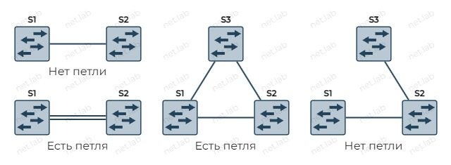
Проблемы петель
Широковещательный шторм
У Ethernet кадров нет TTL. Это также влияет и на проблемы, указанные дальше.
Может привести к потреблению всей доступной полосы пропускания.
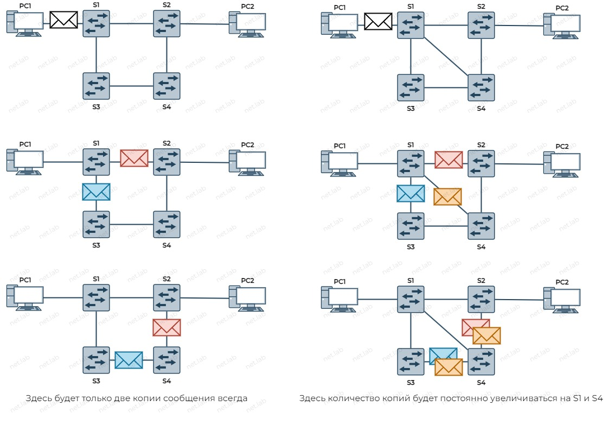
Нестабильность базы данных MAC-адресов
Если любой из ПК отправит широковещательный кадр, и тот когда попадет в петлю, коммутаторы будут заменять в таблице коммутации порт источника, пока кадр не исчезнет из сети.
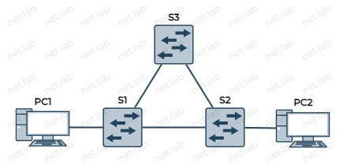
Множественная передача кадров
Дублирование кадров протоколы верхнего уровня могут не распознать и не удалить их. TCP нумерует сообщения, поэтому он может распознать дубликаты.
Решение проблем избыточности
- STP - Spanning Tree Protocol (протокол остовного дерева)
- Стандарт IEEE 802.1D
- Меняет сеть логически, избавляя от петель
- Между двумя точками сети оставляет только один путь
- Физически канал никуда не пропадает
- STP выключает избыточные каналы и включает их обратно при необходимости
- Блокирует и разблокирует порты на коммутаторе
- Заблокированный порт не передает никакие данные, кроме служебных для протокола STP
- В итоге петли пропадают логически, но не физически
Как узнать, какие порты блокировать и на каких устройствах?
Корневой мост
- Синонимы: корневой коммутаторе, root bridge
- Один в широковещательном домене
- Начальная задача STP - выбрать корневой мост
- Корневым мостом становится коммутатор с минимальным значением Bridge ID
Bridge ID
- Есть у каждого коммутатора
- Состоит из:
- Приоритета - 2 байта
- MAC-адреса коммутатора - 6 байтов
Приоритет
- Настраиваемое значение
- Выбрать самому корневой мост
- Корневой мост - самый низкий приоритет
- Если отключается корневой коммутатор, то его место занимает следующий по значению Bridge ID коммутатор
- Диапазон: от 0 до 61440 с шагом в 4096
- Старшие 4 бита
- 0, 4096, 8192, 12288, 16384, 20480, 24576, 28672, 32768, 36864, 40960, 45056, 49152, 53248, 57344 и 61440
- Остальные биты для VLAN.
- По умолчанию у Cisco значение приоритета - 32768
Root ID
- Это Bridge ID, который указывает на корневой мост
- Корневым мостом становится коммутатор с наименьшим Bridge ID
BPDU-кадр
- Содержит Bridge ID, Root ID, стоимость и другие параметры
- Рассылается каждые 2 секунды
- MAC-адрес групповой рассылки -
01:80:C2:00:00:00 - Только внутри широковещательного домена
- MAC-адрес групповой рассылки -
- Корневым мостом становится коммутатор с минимальным значением Bridge ID
Процесс выбора корневого моста
- Изначально каждый коммутатор считает себя корневым
- В первом BPDU всегда Root ID и Bridge ID совпадают
- При получении сравнивается полученный Root ID с локальным (со своим)
- Если принятый Root ID > локального Root ID, то локальный Root ID не изменяется
- Если принятый Root ID < локального Root ID, то локальный Root ID изменяется
Определение пути до корневого моста
На данный момент недоступна передача данных кроме BPDU-кадров.
Каждый некорневой коммутатор определяет стоимость пути до корневого моста.
- При вычислении учитывается скорость передачи по каналам
- Сумма всех портов на пути есть стоимость пути до корневого моста
- Стоимости путей (Википедия)
- Стоимость порта можно изменить для гибкости
После всех вычислений определяются роли портов на каждом коммутаторе.
Роли портов
- Отключенный (disabled)
- Отключен администратором
- Корневой (root)
- Порт, через который можно добраться с некорневого моста до корневого моста
- Через этот порт стоимость до корневого моста минимальна
- Может быть только один на коммутаторе
- Нет такого порта на корневом коммутаторе
- Назначенный (designated)
- Не корневой и не альтернативный порт
- Если на одном конце корневой порт, то на другом - назначенный
- Альтернативный / заблокированный / резервный (atlernative / blocked)
- На другом конце не корневой порт
На следующей схеме показан корневой мост (Root bridge) (см. допущения), роли портов и заблокированный порт (А). Почему заблокирован этот порт см. далее.
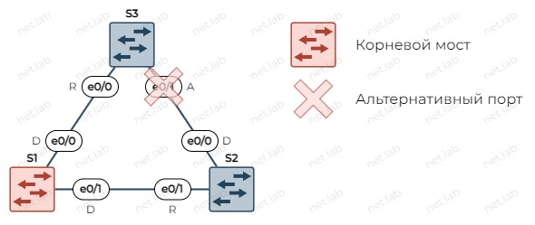
Правила блокировки портов
Если в сети есть петли, то необходимо где-то блокировать порты.
💡 Ассоциация с дорогами
Проще будет понять, какие порты какую роль получают, если коммутаторы заменить на перекрестки, а каналы связи - на дороги. Человеку или автомобилю быстрее проехать по более короткому пути до центра города (Root bridge). И дороги бывают разные по качеству, поэтому и скорость (или стоимость) проезда по ним будет разная.
Порты блокируются на устройствах, у которых есть несколько путей до корневого моста. При этом для блокировки портов выбирается то устройство, которое наиболее удалено от корневого моста.
В трех примерах ниже корневой мост - S1, поэтому на S2 нужно блокировать порты.
Рассмотрим такую схему.

На этой схеме заблокированы будут интерфейсы e0/1, e0/2 на S2. На S1 (не S2) порт e0/0 имеет наименьший Port ID, поэтому этот канал не будет заблокирован, а остальные будут заблокированы. На S2 порт e0/0 тоже имеет наименьший Port ID, но это не имеет значения в данном случае.
Рассмотрим такую схему.
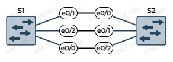
Здесь были изменены порты местами на S1. Незаблокированным портом будет e0/2 на S2, т.к. с другой стороны на S1 порт e0/0 имеет наименьший Port ID. Остальные порты на S2 будут заблокированы.
Рассмотрим такую схему.
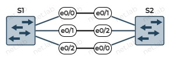
Здесь были изменены порты местами на S2. Незаблокированным портом будет e0/1 на S2, т.к. с другой стороны на S1 порт e0/0 имеет наименьший Port ID.
Когда несколько устройств равноудалены от корневого моста, порты блокируются порты на том устройстве, у которого Bridge ID наибольший.
В случае, когда есть несколько каналов в "невыгодном" пути, то будут заблокированы все порты, т.к. есть более "дешевый" путь. И блокировка происходит на S3, т.к. у него Bridge ID больше, чем у S2.
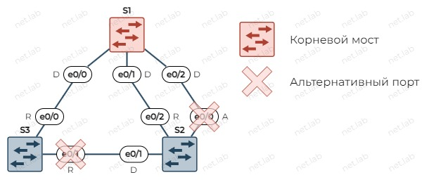
Когда на кратчайшем пути есть несколько каналов, то остается только один. Остается рабочим только тот порт, который подключен к порту (на противоположном коммутаторе) с наименьшим ID.
На
S3заблокирован порт по причине, уже описанной ранее. НаS1не может быть заблокированных портов, т.к. он - корневой мост. НаS2заблокирован портe0/0, а неe0/2, т.к.e0/2подключен кe0/1наS1, у которого Port ID меньше, чем у портаe0/2наS1.
В следующем примере логика та же. На S2 остался не заблокирован только порт e0/3, который подключен к порту на S1 с наименьшим Port ID среди трех вариантов.
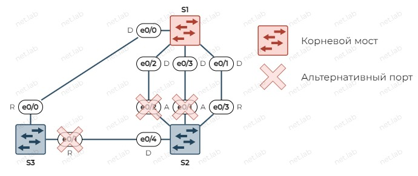
Состояния портов STP
После загрузки коммутатора начинается работа протокола STP. Каждый порт проходит через несколько состояний порта:
- Блокировка (Blocking)
- Является альтернативным портом
- Не пересылает кадры
- Принимает BPDU, т.к. нужно знать данные о корневом мосте
- Прослушивание (Listening)
- Готовится к передаче данных
- Принимает BPDU
- Может передавать свои BPDU-кадры
- Обучение (Learning)
- Изучает сеть
- Заполняет таблицу коммутации для дальнейшей пересылки кадров полезной нагрузки
- Пересылка (Forwarding)
- Порт считается частью активной топологии
- Пересылает кадры данных с полезной нагрузкой
- Отправляет и принимает BPDU-кадры
- Отключен (Disabled)
- STP на него не влияет
- Не принимает участие в STP
- Не отправляет и не принимает никакие кадры, даже BPDU
- Отключен администратором
⛔ Нельзя пропускать состояния по умолчанию
Порт не может перейти из состояния блокировки сразу в состояние пересылки, не зная полной топологии, т.к. может образоваться петля и избавиться от нее может быть невозможным без физического отключения провода или коммутатора.
Разновидности STP
RSTP
- Стандарт IEEE 802.1w
- Более быстрый по сравнению с STP
- Ускоряется схождение алгоритма
- Пропуск некоторых состояний
- Discarding (отбрасывание, заменяет disabled, blocking и listening)
- Learning
- Forwarding
- Использование специальных флагов в BPDU-кадрах
PVST+
- Per-VLAN Spanning Tree
- Проприетарный протокол Cisco
- Усовершенствованный STP для VLAN
-
Для каждой VLAN строит свое дерево STP
- Свои корневые мосты
- Свои приоритеты
- Свои роли портов
На схеме ниже корневой мост для VLAN 10 выбран по умолчанию, а для VLAN 20 - приоритет изменен (уменьшен) на
S2.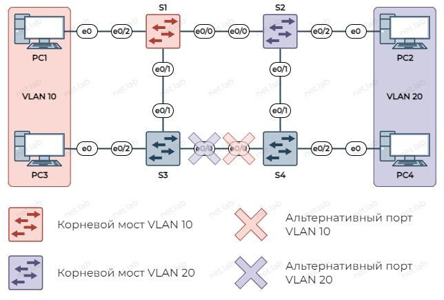
❓ Какие роли портов у коммутаторов в каждой VLAN на схеме выше?
-
Функция PortFast
- К порту не подключается другой коммутатор, а подключается конечное устройство
- Сразу состояние пересылки минуя остальные состояния
На схеме выделены порты, где возможно включение функции portfast. На остальных портах в данном случае нельзя включать portfast, т.к. это может привести к широковещательному шторму.
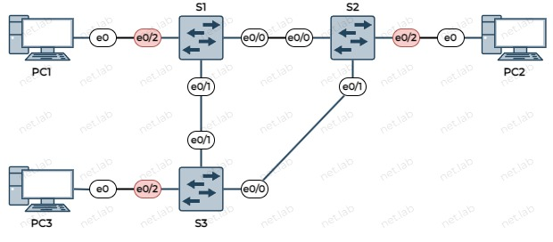
-
Функция BPDU guard
- Используется вместе с функцией portfast, чтобы обезопасить сеть от подключения к порту коммутаторов вместо конечных устройств
- При получении на таком порту BPDU-кадра порт перейдет в защитное состояние - заблокируется, т.к. на порту не допускает получения BPDU-кадров
Rapid PVST+
- Усовершенствованный RSTP для VLAN
- Проприетарный протокол Cisco
MSTP
- Открытый стандарт
- Строит отдельное дерево STP для каждого экземпляра
- В случае PVST+, для каждого VLAN рассчитывается своя топология, тратится время ЦП и память
- В случае MSTP топология рассчитывается на один экземпляр
- В одном экземпляре может быть только один VLAN или несколько VLAN, если для них нужно одинаковое дерево STP. Объединение нескольких VLAN в одном экземпляре позволяет экономить вычислительные ресурсы
- Коммутаторы объединяются в регионы
- Внутри региона строятся деревья для каждого экземпляра
- Между регионами строится отдельное дерево - MST0 (экземпляр/instance 0)
- Если используется только один инстанс 0, то это равносильно отсутствию VLAN, и на всей схеме будет одно дерево
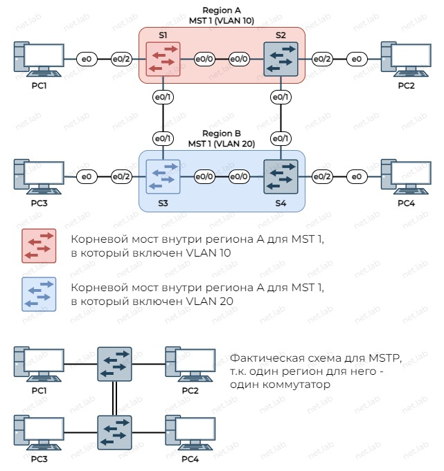
Примеры (Cisco)
Поскольку на Cisco по умолчанию используется PVST+, то в начале каждого примера необходимо настроить режим MSTP.
conf t
spanning-tree mode mst
end
Пример 1
Условия: - Один инстанс MSTP - MST0 - Одна VLAN - 1
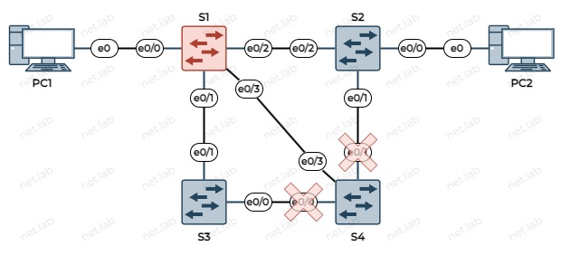
Выяснить, какие порты заблокированы по умолчанию, можно с помощью команды
show spanning-tree mst
Среди всего вывода нужно найти такие интерфейсы, у которых в поле Sts (Status) указано BLK (заблокирован), а Role - Altn (альтернативный).
Ниже представлен вывод только на S4, т.к. только там порты заблокированы.
S4#show spanning-tree mst
##### MST0 vlans mapped: 1-4094
Bridge address aabb.cc00.0400 priority 32768 (32768 sysid 0)
Root address aabb.cc00.0100 priority 32768 (32768 sysid 0)
port Et0/3 path cost 0
Regional Root address aabb.cc00.0100 priority 32768 (32768 sysid 0)
internal cost 2000000 rem hops 19
Operational hello time 2 , forward delay 15, max age 20, txholdcount 6
Configured hello time 2 , forward delay 15, max age 20, max hops 20
Interface Role Sts Cost Prio.Nbr Type
---------------- ---- --- --------- -------- --------------------------------
Et0/0 Altn BLK 2000000 128.1 P2p
Et0/1 Altn BLK 2000000 128.2 P2p
Et0/2 Desg BLK 2000000 128.3 P2p
Et0/3 Root FWD 2000000 128.4 P2p
...
Корневым портом является e0/3, т.к. через него ближе до корневого моста, а остальные порты заблокированы.
Если задать на ПК адреса, то "пинг" между ними будет проходить кратчайшим путем: S1 - S2.
Стоимость до корневого моста равна 2 000 000. Если отключить порт e0/3, то стоимость изменится - 4 000 000.
S4#show spanning-tree mst
##### MST0 vlans mapped: 1-4094
Bridge address aabb.cc00.0400 priority 32768 (32768 sysid 0)
Root address aabb.cc00.0100 priority 32768 (32768 sysid 0)
port Et0/1 path cost 0
Regional Root address aabb.cc00.0100 priority 32768 (32768 sysid 0)
internal cost 4000000 rem hops 18
Operational hello time 2 , forward delay 15, max age 20, txholdcount 6
Configured hello time 2 , forward delay 15, max age 20, max hops 20
Interface Role Sts Cost Prio.Nbr Type
---------------- ---- --- --------- -------- --------------------------------
Et0/0 Altn BLK 2000000 128.1 P2p
Et0/1 Root FWD 2000000 128.2 P2p
Et0/2 Desg LRN 2000000 128.3 P2p
Et1/0 Desg LRN 2000000 128.5 P2p
...
Изменение пути прохождения трафика
⚠️ Все порты должны быть включены.
Чтобы заставить проходить трафик между ПК самым длинным путем, необходимо менять стоимость на портах.
По умолчанию в данном случае стоимость на портах равна 2 000 000.
На S2 стоимость порта e0/2 должна превышать стоимость длинного пути (3 х 2 000 000). Необходимо либо увеличить стоимость на e0/2, либо уменьшить стоимость на длинном пути. Далее демонстрируется первый вариант.
S2#
conf t
int e0/2
spanning-tree mst 0 cost 6000001
end
Теперь на S2 до корневого моста лежит через S4, но путь все еще не самый длинный, т.к. от S4 он сразу идет на S1. На S4 также нужно изменить стоимость.
S2#show spanning-tree mst
##### MST0 vlans mapped: 1-4094
Bridge address aabb.cc00.0200 priority 32768 (32768 sysid 0)
Root address aabb.cc00.0100 priority 32768 (32768 sysid 0)
port Et0/1 path cost 0
Regional Root address aabb.cc00.0100 priority 32768 (32768 sysid 0)
internal cost 4000000 rem hops 18
Operational hello time 2 , forward delay 15, max age 20, txholdcount 6
Configured hello time 2 , forward delay 15, max age 20, max hops 20
Interface Role Sts Cost Prio.Nbr Type
---------------- ---- --- --------- -------- --------------------------------
Et0/0 Desg FWD 2000000 128.1 P2p
Et0/1 Root FWD 2000000 128.2 P2p
Et0/2 Altn BLK 6000001 128.3 P2p
Et0/3 Desg FWD 2000000 128.4 P2p
...
#S4
conf t
int e0/3
spanning-tree mst 0 cost 4000001
end
После этого на S2 изменится стоимость до корневого моста на 6 000 000, что будет означать, что используется самый длинный (не по стоимости) путь из коммутаторов.
S2#show spanning-tree mst
##### MST0 vlans mapped: 1-4094
Bridge address aabb.cc00.0200 priority 32768 (32768 sysid 0)
Root address aabb.cc00.0100 priority 32768 (32768 sysid 0)
port Et0/1 path cost 0
Regional Root address aabb.cc00.0100 priority 32768 (32768 sysid 0)
internal cost 6000000 rem hops 17
Operational hello time 2 , forward delay 15, max age 20, txholdcount 6
Configured hello time 2 , forward delay 15, max age 20, max hops 20
Interface Role Sts Cost Prio.Nbr Type
---------------- ---- --- --------- -------- --------------------------------
Et0/0 Desg FWD 2000000 128.1 P2p
Et0/1 Root FWD 2000000 128.2 P2p
Et0/2 Altn BLK 6000001 128.3 P2p
Et0/3 Desg FWD 2000000 128.4 P2p
...
❓ Какие порты заблокированы на остальных коммутаторах?
Если теперь выполнить "пинг" между ПК, то пакеты будут проходить по пути S1 - S3 - S4 - S2.
Отключение STP
Т.к. STP по умолчанию обычно включен, то проблем нет. Что будет, если его отключить?
Чтобы изучить это, нужен широковещательный трафик. Проще всего его получить "пингом", т.к. из-за него может генерироваться ARP-запрос. Для этого нужно задать IP-адреса на ПК.
При включенном (M)STP, ПК будут "пинговаться". ARP-запрос не будет бесконечно блуждать по широковещательному домену.
Теперь необходимо отключить на S4 порт e0/3. Теперь одного физического канала фактически нет. После этого необходимо перевести STP в режим PVST+, и отключить его на каждом коммутаторе (для "надежности").
conf t
sp mode pvst
no sp vlan 1
end
Если теперь выполнить "пинг" с одного ПК на другой, то должен отправиться ARP-запрос, который будет блуждать по сети бесконечно. При этом устройства могут подтормаживать, а ICMP-сообщения не уходить и не приходить. Пронаблюдать все это можно с помощью Wireshark 🦈.
Если прошлые действия не привели к потере ICMP-сообщений, то можно обратно включить порт e0/3 на S4. Вновь, выполнив "пинг", сразу или подождав, любые пакеты станут пропадать, т.к. теперь широковещательные кадры будут "размножаться" из-за тройного соединения на S1 и S4.
Пример 2
Условия:
- MST0 (VLAN 1)
- Изменить корневой мост с S1 на S3
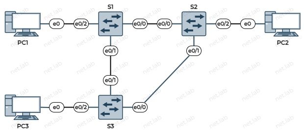
Исходя из допущений, корневой мост - S1.
S3#show spanning-tree mst
##### MST0 vlans mapped: 1-4094
Bridge address aabb.cc00.0300 priority 32768 (32768 sysid 0)
Root address aabb.cc00.0100 priority 32768 (32768 sysid 0)
port Et0/1 path cost 0
Regional Root address aabb.cc00.0100 priority 32768 (32768 sysid 0)
internal cost 2000000 rem hops 19
...
Чтобы изменить корневой мост, нужно изменить приоритеты коммутаторов так, чтобы у необходимого коммутатора приоритет стал ниже всех.
Настройка S3
conf t
spanning-tree mode mst
spanning-tree mst 0 priority 4096
end
В выводе необходимо убедиться, что корневым мостом стал S3.
S3#show spanning-tree mst
##### MST0 vlans mapped: 1-4094
Bridge address aabb.cc00.0300 priority 4096 (4096 sysid 0)
Root this switch for the CIST
Operational hello time 2 , forward delay 15, max age 20, txholdcount 6
Configured hello time 2 , forward delay 15, max age 20, max hops 20
...
❓ Какие порты заблокированы ДО и ПОСЛЕ изменения корневого моста?
До:
e0/0на S3После:
e0/0на S2
Пример 3
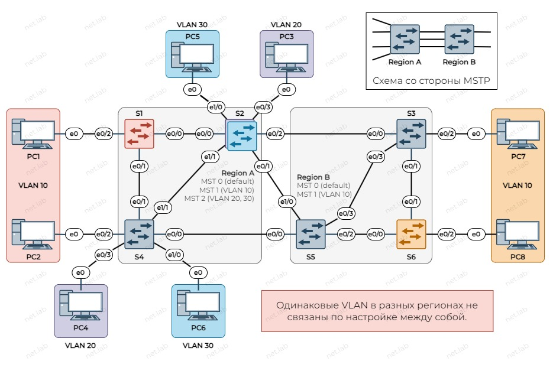
Условия
- Два региона
- В регионе A два инстанса + инстанс по умолчанию (MST 0) для всего остального
- Один инстанс (MST 2) для VLAN 20 и 30
- Корневой мост для MST 1 -
S1 - Корневой мост для MST 2 -
S2 - Корневой мост для MST 0 -
S4
- В регионе B один инстанс + инстанс по умолчанию (MST 0) для всего остального
- Один инстанс (MST 1) для VLAN 10
- Корневой мост для MST 1 -
S6 - Корневой мост для MST 0 -
S5
- CIST -
S5- Это корневой мост для всех регионов
- Нужен, чтобы блокировать порты между регионами
Настройка на всех коммутаторах на схеме
conf t
span mode mst
end
Настройка региона B
Регион B настраивается аналогично примеру 2, только теперь тут вместо VLAN 1 - VLAN 10.
conf t
spanning-tree mst configuration
instance 1 vlan 10
exit
vlan 10
name VLAN10
exit
int e0/2
sw mode access
sw ac vl 10
exit
int range e0/0 , e0/1 , e0/3
sw tr enc dot1q
sw mode trunk
end
conf t
spanning-tree mst configuration
instance 1 vlan 10
exit
vlan 10
name VLAN10
exit
int e0/2
sw mode access
sw ac vl 10
exit
int range e0/0 - 1
sw tr enc dot1q
sw mode trunk
end
conf t
vlan 10
name VLAN10
exit
spanning-tree mst configuration
instance 1 vlan 10
exit
spanning-tree mst 0 priority 4096
int range e0/0 , e0/2-3, e1/0
sw tr enc dot
sw mode tr
end
Проверка настроек региона B
MST0 на S3
S3# sh sp mst 0
##### MST0 vlans mapped: 1-9,11-4094
Bridge address aabb.cc00.0300 priority 32768 (32768 sysid 0)
Root address aabb.cc00.0500 priority 4096 (4096 sysid 0)
port Et0/3 path cost 0
Regional Root address aabb.cc00.0500 priority 4096 (4096 sysid 0)
internal cost 2000000 rem hops 19
Operational hello time 2 , forward delay 15, max age 20, txholdcount 6
Configured hello time 2 , forward delay 15, max age 20, max hops 20
Interface Role Sts Cost Prio.Nbr Type
---------------- ---- --- --------- -------- --------------------------------
Et0/0 Desg FWD 2000000 128.1 P2p
Et0/1 Desg FWD 2000000 128.2 P2p
Et0/2 Desg FWD 2000000 128.3 P2p
Et0/3 Root FWD 2000000 128.4 P2p
Et1/0 Desg FWD 2000000 128.5 P2p
Et1/1 Desg FWD 2000000 128.6 P2p
...
Regional Root address aabb.cc00.0500 говорит о том, что S5 стал корневым мостом в данном регионе в MST0.
Root address aabb.cc00.0500 говорит о том, что S5 стал корневым мостом во всей схеме для MST0.
MST1 на S3
S3# sh sp mst 1
##### MST1 vlans mapped: 10
Bridge address aabb.cc00.0300 priority 32769 (32768 sysid 1)
Root address aabb.cc00.0600 priority 4097 (4096 sysid 1)
port Et0/1 cost 2000000 rem hops 19
Interface Role Sts Cost Prio.Nbr Type
---------------- ---- --- --------- -------- --------------------------------
Et0/0 Desg FWD 2000000 128.1 P2p
Et0/1 Root FWD 2000000 128.2 P2p
Et0/2 Desg FWD 2000000 128.3 P2p
Et0/3 Desg FWD 2000000 128.4 P2p
Root address aabb.cc00.0600 говорит о том, что S6 стал корневым мостом для MST1 в данном регионе.
MST0 на S6
S6#sh sp mst 0
##### MST0 vlans mapped: 1-9,11-4094
Bridge address aabb.cc00.0600 priority 32768 (32768 sysid 0)
Root address aabb.cc00.0500 priority 4096 (4096 sysid 0)
port Et0/0 path cost 0
Regional Root address aabb.cc00.0500 priority 4096 (4096 sysid 0)
internal cost 2000000 rem hops 19
Operational hello time 2 , forward delay 15, max age 20, txholdcount 6
Configured hello time 2 , forward delay 15, max age 20, max hops 20
Interface Role Sts Cost Prio.Nbr Type
---------------- ---- --- --------- -------- --------------------------------
Et0/0 Root FWD 2000000 128.1 P2p
Et0/1 Altn BLK 2000000 128.2 P2p
Et0/2 Desg FWD 2000000 128.3 P2p
Et0/3 Desg FWD 2000000 128.4 P2p
Et1/0 Desg FWD 2000000 128.5 P2p
Et1/1 Desg FWD 2000000 128.6 P2p
...
MST1 на S6
S6#sh sp mst 1
##### MST1 vlans mapped: 10
Bridge address aabb.cc00.0600 priority 4097 (4096 sysid 1)
Root this switch for MST1
Interface Role Sts Cost Prio.Nbr Type
---------------- ---- --- --------- -------- --------------------------------
Et0/0 Desg FWD 2000000 128.1 P2p
Et0/1 Desg FWD 2000000 128.2 P2p
Et0/2 Desg FWD 2000000 128.3 P2p
Root this switch for MST1 говорит о том, что S6 стал корневым мостом для MST1 в данном регионе.
MST0 на S5
S5#sh sp mst 0
##### MST0 vlans mapped: 1-9,11-4094
Bridge address aabb.cc00.0500 priority 4096 (4096 sysid 0)
Root this switch for the CIST
Operational hello time 2 , forward delay 15, max age 20, txholdcount 6
Configured hello time 2 , forward delay 15, max age 20, max hops 20
Interface Role Sts Cost Prio.Nbr Type
---------------- ---- --- --------- -------- --------------------------------
Et0/0 Desg FWD 2000000 128.1 P2p
Et0/1 Desg FWD 2000000 128.2 P2p
Et0/2 Desg FWD 2000000 128.3 P2p
Et0/3 Desg FWD 2000000 128.4 P2p
Et1/0 Desg FWD 2000000 128.5 P2p
Et1/1 Desg FWD 2000000 128.6 P2p
Et1/2 Desg FWD 2000000 128.7 P2p
...
MST1 на S5
S5#sh sp mst 1
##### MST1 vlans mapped: 10
Bridge address aabb.cc00.0500 priority 32769 (32768 sysid 1)
Root address aabb.cc00.0600 priority 4097 (4096 sysid 1)
port Et0/2 cost 2000000 rem hops 19
Interface Role Sts Cost Prio.Nbr Type
---------------- ---- --- --------- -------- --------------------------------
Et0/0 Desg FWD 2000000 128.1 P2p
Et0/2 Root FWD 2000000 128.3 P2p
Et0/3 Altn BLK 2000000 128.4 P2p
Et1/0 Desg FWD 2000000 128.5 P2p
Настройка региона A
conf t
spanning-tree mst configuration
instance 1 vlan 10
instance 2 vlan 20,30
exit
spanning-tree mst 1 priority 4096
vlan 10
name VLAN10
exit
vlan 20
name VLAN20
exit
vlan 30
name VLAN30
exit
int e0/2
sw mode access
sw ac vl 10
exit
int range e0/0 , e0/1
sw tr enc dot1q
sw mode trunk
end
conf t
spanning-tree mst configuration
instance 1 vlan 10
instance 2 vlan 20,30
exit
vlan 10
name VLAN10
exit
vlan 20
name VLAN20
exit
vlan 30
name VLAN30
exit
int e0/2
sw mode access
sw ac vl 10
exit
int e0/3
sw mode access
sw ac vl 20
exit
int e1/0
sw mode access
sw ac vl 30
exit
int range e0/0 , e0/1 , e1/1
sw tr enc dot1q
sw mode trunk
end
conf t
spanning-tree mst configuration
instance 1 vlan 10
instance 2 vlan 20,30
exit
spanning-tree mst 0 priority 4096
spanning-tree mst 2 priority 4096
vlan 10
name VLAN10
exit
vlan 20
name VLAN20
exit
vlan 30
name VLAN30
exit
int e1/0
sw mode access
sw ac vl 30
exit
int e0/3
sw mode access
sw ac vl 20
exit
int range e0/0-2 , e1/1
sw tr enc dot1q
sw mode trunk
end
Проверка настроек региона A
S2#sh sp mst 1
##### MST1 vlans mapped: 10
Bridge address aabb.cc00.0200 priority 32769 (32768 sysid 1)
Root address aabb.cc00.0100 priority 4097 (4096 sysid 1)
port Et0/0 cost 2000000 rem hops 19
Interface Role Sts Cost Prio.Nbr Type
---------------- ---- --- --------- -------- --------------------------------
Et0/0 Root FWD 2000000 128.1 P2p
Et0/1 Desg FWD 2000000 128.2 P2p
Et0/2 Desg FWD 2000000 128.3 P2p
Et1/1 Desg FWD 2000000 128.6 P2p
Root address aabb.cc00.0100 говорит о том, что для MST1 корневой мост - S1.
S2#sh sp mst 2
##### MST2 vlans mapped: 20,30
Bridge address aabb.cc00.0200 priority 4098 (4096 sysid 2)
Root this switch for MST2
Interface Role Sts Cost Prio.Nbr Type
---------------- ---- --- --------- -------- --------------------------------
Et0/0 Desg FWD 2000000 128.1 P2p
Et0/1 Desg FWD 2000000 128.2 P2p
Et0/2 Desg FWD 2000000 128.3 P2p
Et0/3 Desg FWD 2000000 128.4 P2p
Et1/0 Desg FWD 2000000 128.5 P2p
Et1/1 Desg FWD 2000000 128.6 P2p
Root this switch for MST2 говорит о том, что для MST2 корневой мост - S2.
S2#sh sp mst 0
##### MST0 vlans mapped: 1-9,11-19,21-29,31-4094
Bridge address aabb.cc00.0200 priority 4096 (4096 sysid 0)
Root this switch for the CIST
Operational hello time 2 , forward delay 15, max age 20, txholdcount 6
Configured hello time 2 , forward delay 15, max age 20, max hops 20
Interface Role Sts Cost Prio.Nbr Type
---------------- ---- --- --------- -------- --------------------------------
Et0/0 Desg FWD 2000000 128.1 P2p
Et0/1 Desg FWD 2000000 128.2 P2p
Et0/2 Desg FWD 2000000 128.3 P2p
Et0/3 Desg FWD 2000000 128.4 P2p
Et1/0 Desg FWD 2000000 128.5 P2p
Et1/1 Desg FWD 2000000 128.6 P2p
...
Root this switch for the CIST говорит о том, что для MST1 корневой мост - S2, т.е. самый главный коммутатор во всей сети - S2. По условию им должен был стать S5. Так получилось потому, что в MST0 у S2 и S5 одинаковый приоритет - 4096. Но, поскольку у S5 MAC-адрес больше, то главнее становится S2. Чтобы исправить ситуацию, на S2 необходимо увеличить приоритет.
Настройка S2
conf t
spanning-tree mst 0 priority 8192
end
После этого все станет так, как задумано.
S2#sh sp mst 0
##### MST0 vlans mapped: 1-9,11-19,21-29,31-4094
Bridge address aabb.cc00.0200 priority 8192 (8192 sysid 0)
Root address aabb.cc00.0500 priority 4096 (4096 sysid 0)
port Et0/1 path cost 2000000
Regional Root this switch
Operational hello time 2 , forward delay 15, max age 20, txholdcount 6
Configured hello time 2 , forward delay 15, max age 20, max hops 20
Interface Role Sts Cost Prio.Nbr Type
---------------- ---- --- --------- -------- --------------------------------
Et0/0 Desg FWD 2000000 128.1 P2p
Et0/1 Root FWD 2000000 128.2 P2p Bound(RSTP)
Et0/2 Altn BLK 2000000 128.3 P2p Bound(RSTP)
Et0/3 Desg FWD 2000000 128.4 P2p
Et1/0 Desg FWD 2000000 128.5 P2p
Et1/1 Desg FWD 2000000 128.6 P2p
...
Какие порты блокируются между регионами?
Для этого нужно анализировать MST0.
Поскольку CIST - S5, то на нем не может быть заблокированных портов. У него все порты - назначенные.
S5#sh sp mst 0
##### MST0 vlans mapped: 1-9,11-4094
Bridge address aabb.cc00.0500 priority 4096 (4096 sysid 0)
Root this switch for the CIST
Operational hello time 2 , forward delay 15, max age 20, txholdcount 6
Configured hello time 2 , forward delay 15, max age 20, max hops 20
Interface Role Sts Cost Prio.Nbr Type
---------------- ---- --- --------- -------- --------------------------------
Et0/0 Desg FWD 2000000 128.1 P2p
Et0/1 Desg FWD 2000000 128.2 P2p
Et0/2 Desg FWD 2000000 128.3 P2p
Et0/3 Desg FWD 2000000 128.4 P2p
Et1/0 Desg FWD 2000000 128.5 P2p
Et1/1 Desg FWD 2000000 128.6 P2p
Et1/2 Desg FWD 2000000 128.7 P2p
...
- В каждом регионе есть региональный корневой коммутатор для
MST0 - Остальные коммутаторы в каждом регионе строят путь до этого регионального корневого коммутатора
- Между регионами строятся кратчайшие пути между региональными корневыми коммутаторами
S2 - региональный корневой коммутатор для MST0, поэтому внутри региона не может быть заблокированных портов. Но он соединен двумя каналами с другим регионом, и среди них выбирается корневым тот, через который ближе до CIST - e0/1.
S2#sh sp mst 0
##### MST0 vlans mapped: 1-9,11-19,21-29,31-4094
Bridge address aabb.cc00.0200 priority 8192 (8192 sysid 0)
Root address aabb.cc00.0500 priority 4096 (4096 sysid 0)
port Et0/1 path cost 2000000
Regional Root this switch
Operational hello time 2 , forward delay 15, max age 20, txholdcount 6
Configured hello time 2 , forward delay 15, max age 20, max hops 20
Interface Role Sts Cost Prio.Nbr Type
---------------- ---- --- --------- -------- --------------------------------
Et0/0 Desg FWD 2000000 128.1 P2p
Et0/1 Root FWD 2000000 128.2 P2p Bound(RSTP)
Et0/2 Altn BLK 2000000 128.3 P2p Bound(RSTP)
Et0/3 Desg FWD 2000000 128.4 P2p
Et1/0 Desg FWD 2000000 128.5 P2p
Et1/1 Desg FWD 2000000 128.6 P2p
Et1/2 Desg FWD 2000000 128.7 P2p
...
S3 и S4 строят пути только до регионального корневого коммутатора для MST0.
S4#sh sp mst 0
##### MST0 vlans mapped: 1-9,11-19,21-29,31-4094
Bridge address aabb.cc00.0400 priority 32768 (32768 sysid 0)
Root address aabb.cc00.0500 priority 4096 (4096 sysid 0)
port Et1/1 path cost 2000000
Regional Root address aabb.cc00.0200 priority 8192 (8192 sysid 0)
internal cost 2000000 rem hops 19
Operational hello time 2 , forward delay 15, max age 20, txholdcount 6
Configured hello time 2 , forward delay 15, max age 20, max hops 20
Interface Role Sts Cost Prio.Nbr Type
---------------- ---- --- --------- -------- --------------------------------
Et0/0 Altn BLK 2000000 128.1 P2p Bound(RSTP)
Et0/1 Altn BLK 2000000 128.2 P2p
Et0/2 Desg FWD 2000000 128.3 P2p
Et0/3 Desg FWD 2000000 128.4 P2p
Et1/0 Desg FWD 2000000 128.5 P2p
Et1/1 Root FWD 2000000 128.6 P2p
Et1/2 Desg FWD 2000000 128.7 P2p
...
S3#sh sp mst 0
##### MST0 vlans mapped: 1-9,11-4094
Bridge address aabb.cc00.0300 priority 32768 (32768 sysid 0)
Root address aabb.cc00.0500 priority 4096 (4096 sysid 0)
port Et0/3 path cost 0
Regional Root address aabb.cc00.0500 priority 4096 (4096 sysid 0)
internal cost 2000000 rem hops 19
Operational hello time 2 , forward delay 15, max age 20, txholdcount 6
Configured hello time 2 , forward delay 15, max age 20, max hops 20
Interface Role Sts Cost Prio.Nbr Type
---------------- ---- --- --------- -------- --------------------------------
Et0/0 Desg FWD 2000000 128.1 P2p
Et0/1 Desg FWD 2000000 128.2 P2p
Et0/2 Desg FWD 2000000 128.3 P2p
Et0/3 Root FWD 2000000 128.4 P2p
Et1/0 Desg FWD 2000000 128.5 P2p
Et1/1 Desg FWD 2000000 128.6 P2p
Et1/2 Desg FWD 2000000 128.7 P2p
...
⚠️ Важно
Если изменить региональный корневой мост в регионе B на
S6, то наS2будет корневым тот порт, который подключен к коммутатору с наименьшим приоритетом. Например, уS5приоритет - 8192,S3- по умолчанию,S6- 4096. Тогда наS2будет корневым портe0/1.Если приоритеты одинаковые, то сравниваются MAC-адреса.
В целом, идея та же, что при отсутствии регионов.
🧠 Самостоятельная работа
- Повторить пример 1. Выполнить описанную работу по изменению стоимости путей и изучить результат. Рекомендуется также видоизменять схему и проверять роли портов их статус и стоимости до корневого моста.
- Повторить пример 2. Сделать корневым мостом
S2и чтобы заблокированным портом былe0/0наS1. -
Полностью повторить пример 3. С помощью Wireshark изучить MSTP-трафик.
- Вместо VLAN 10 использовать VLAN
x * 100 + 10 - Вместо VLAN 20 использовать VLAN
x * 100 + 20 - Вместо VLAN 30 использовать VLAN
x * 100 + 30 - Сеть для ПК -
192.168.x.0/24
- Вместо VLAN 10 использовать VLAN
🧰 Лабораторная работа
Ознакомиться перед выполнением
- Вместо ❔ или
xнужно подставить свой номер по журналу - Выполнять задание без "отмашки" не стоит ⛔, т.к. задание здесь может отличаться от актуальной версии
- У каждой работы есть срок сдачи 📅, который озвучивается на занятии, после которого работа не может быть защищена на максимальный балл 📉
- Дополнительные задания 📚 не являются обязательными, но по результатам сдачи лабораторной работы может быть выдано одно или несколько из них. Также дополнительное задание может быть сформулировано устно
- Для каждой лабораторной работы должен быть отчет 📝 с описанием выполнения ваших действий, оформление должно соответствовать требованиям (см. на сайте учебного заведения)
- Нужно уметь ответить на вопросы ❓ по теме, контрольные вопросы и другие связанные вопросы
- Примеры могут быть выполнены по желанию, а также выданы в качестве дополнительного задания с изменениями или без в случае неуспешной 😢 защиты основной работы
- Иногда в работах встречаются задания по IPv4 и IPv6 одновременно 🔗. Это считается как одна работа. Допускается сдача работы только с IPv4 или только с IPv6, но максимальный балл в таком случае получить невозможно
🎯 Цель работы: получить навыки настройки протокола MSTP.
⛔ Перед выполнением задания настоятельно рекомендуется разобраться с примерами и выполнить самостоятельную работу.
Схема
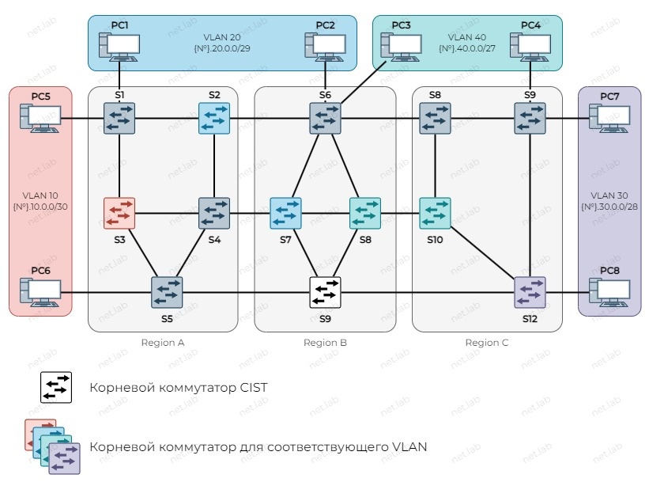
Условия
- Адресация для каждой VLAN указана на схеме
- Корневые коммутаторы для VLAN в регионах указаны на схеме. Если не указан - произвольный
- Региональный корневой коммутатор в
MSI0- У четного варианта - коммутатор с наибольшим номером в названии
- У нечетного варианта - коммутатор с наименьшим номером в названии
- ПК внутри одной VLAN должны "пинговаться"
- При отключении любого провода или нескольких (или отключении любых коммутаторов), если есть физическая возможность, ПК должны "пинговаться"
- При переводе любого ПК в другую VLAN (и изменении IP-адреса, если нужно) он должен "пинговаться" с другими ПК той же VLAN
- При переключении любого ПК к любому другому коммутатору (и переводе порта в соответствующую VLAN) он должен "пинговаться" с другими ПК той же VLAN
- При отключении
S9корневым мостом CIST должен статьS6
🤔 Контрольные вопросы
- Какими способами можно остановить широковещательный шторм?
Используя данный сайт и его ресурсы, вы соглашаетесь с политикой и соглашениями сайта.
©️ Оформление, изложение, медиаматериалы. И. Попов, 2020-2025
Сделано с помощью Material for MkDocs.